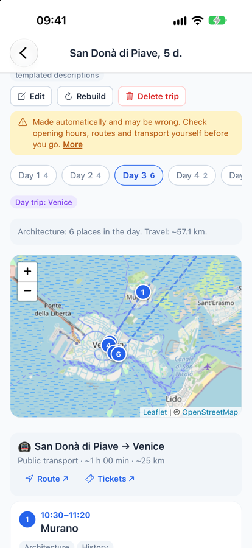
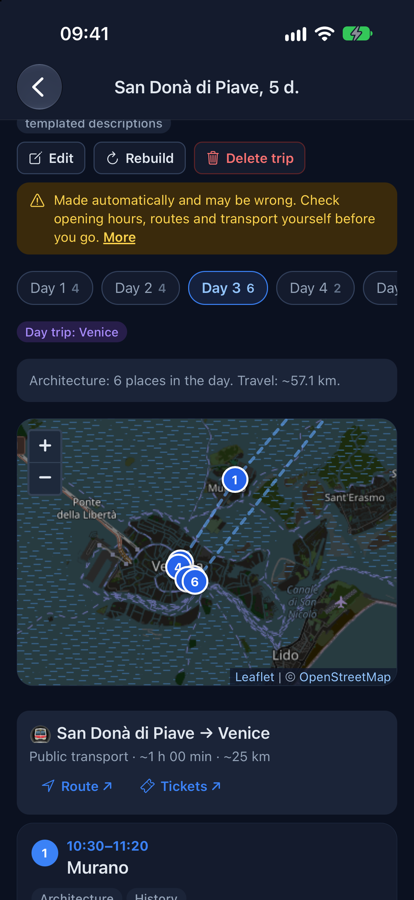
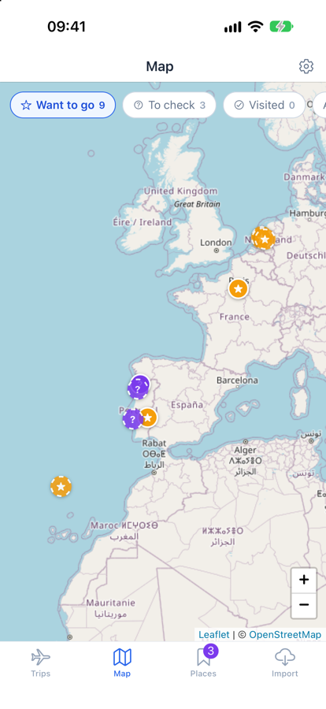
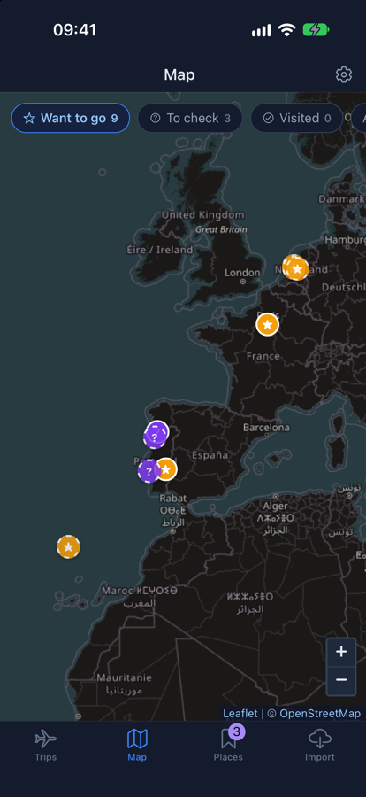
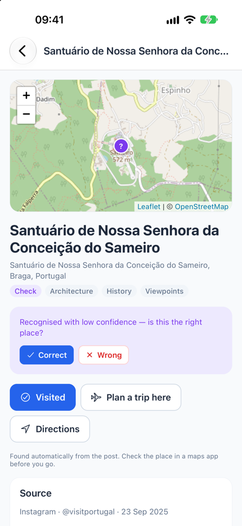
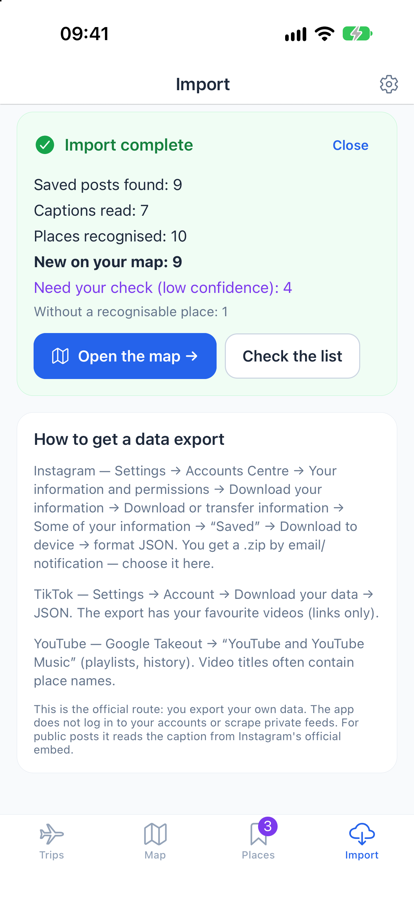
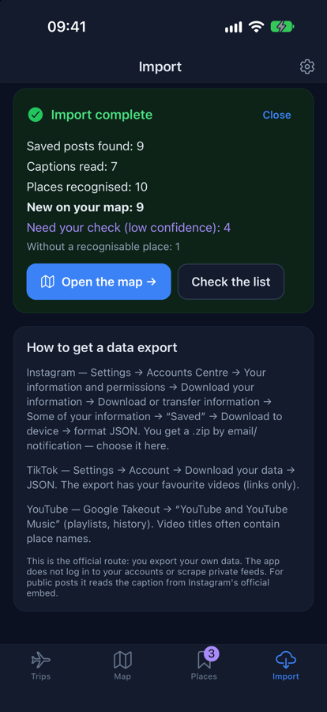

What it looks like








What it does
-
A plan, day by day
Days, interests and the ways you get around go in. Out come days of nearby stops in a sensible order, each with a visit length, a start time and the walk, ride or drive to the next.
-
Your saved posts on a map
A pin in the caption, a landmark it names, a town in its hashtags — each saved post becomes a place, with a link back to the post, and the plan puts those places first.
-
Day trips that include the journey
A small town can't fill three days, so a longer stay by car or public transport looks up to 45 km out. A day in Venice from San Donà di Piave starts with the train there and ends with the train back, each with a route and a ticket search.
-
Edit anything
Reorder stops, move them between days, add or remove places and days, change how long a visit takes or when the day starts — the times and transfers follow.
-
Tickets as links
Flights, trains and buses are searched on Google Flights, Aviasales, Trainline and Rome2rio, on their own sites. Nothing is booked or paid for in the app.
-
No keys needed
Maps are OpenStreetMap, places come from Wikipedia and OpenStreetMap, and five cities ship with the app. With your own Anthropic key, Claude writes the day summaries; without one, templates do.
-
You confirm the guesses
A place the app is not sure of waits for your "correct" or "wrong". A wrong one is remembered, so importing the next export doesn't bring it back, and its post waits for you to set the place by hand.
-
Russian and English
The interface, the built-in places and the plans themselves. The phone's language decides, and Settings can switch it.
How a plan is made
Where and when is worked out by code, the same way every time. A language model, if you add a key, only writes the words around a finished plan — it never picks the places or the times.
-
Places
A built-in set for Lisbon, Barcelona, Rome, Paris and Amsterdam. Anywhere else, sights with a Wikipedia article, places to eat from OpenStreetMap, and your own saved places within 25 km.
-
Ranking
By your interests and by how well known a place is — how many Wikipedias write about it. Places from your posts get a boost; a pin that only knows the town is never planned as a stop.
-
Days
One chain through the places, nearest to nearest, cut into days. A longer stay by car or public transport adds days out to the best-known towns around.
-
Timing
A visit length for each kind of place, and every transfer estimated from the distance and the way you travel — a regional train or bus between towns, not city transit.
-
Words
Day summaries and tips from templates in Russian or English, or from Claude with your key.
Where your places come from
Instagram, TikTok and YouTube don't let an app read what you saved, so Travel Planner takes the route they have to offer: your own data export. Request it in Instagram's or TikTok's settings, or in Google Takeout for YouTube, then open the file in Travel Planner — it is read on the phone, straight from the zip.
An older Instagram export lists only links. For those, the app reads each public post's caption from Instagram's official embed — the page any website shows when it embeds a post. There is no login and no scraping of private feeds; a private or deleted post simply stays unresolved, and you can set its place by hand. A guess the app is unsure of waits for your "correct" or "wrong", and a pin that only knows the town is marked approximate.
Check before you go
Everything in a plan is put together automatically, and any of it can be wrong. A place may be closed, gone or not where its pin is — a pin from a post is a guess until you confirm it. Opening hours, prices, tickets and entry rules are not checked. Travel times are estimates from the distance, not timetables, and a line on the map may be a way nobody should walk or drive. Descriptions written by a language model can contain mistakes and made-up facts.
So check everything that matters — official websites, a maps app, the local transport — before you set off, and don't go anywhere you aren't sure is safe. The app asks you to accept this on first launch and repeats it on every plan. It comes with no guarantees: its plans are used at your own risk.
![The notice shown on first launch, Check before you go: plans, places and pins are put together automatically from OpenStreetMap, Wikipedia and imported posts, and any of it can be wrong — a place may be closed or not where its pin is, opening hours, prices, tickets and entry rules are not checked, travel times are estimates and a route may be impassable or unsafe, descriptions can contain mistakes. Check everything that matters yourself before you set off; the app gives no guarantees and its plans are used at your own risk. One button: I understand.](assets/notice-light.png)
![The notice shown on first launch, Check before you go: plans, places and pins are put together automatically from OpenStreetMap, Wikipedia and imported posts, and any of it can be wrong — a place may be closed or not where its pin is, opening hours, prices, tickets and entry rules are not checked, travel times are estimates and a route may be impassable or unsafe, descriptions can contain mistakes. Check everything that matters yourself before you set off; the app gives no guarantees and its plans are used at your own risk. One button: I understand. Shown in the app's dark theme.](assets/notice-dark.png)
Where the data lives
On the phone. Trips, saved places and imported posts stay in the app's own storage; there is no account and no server of its own. An Anthropic key, if you add one, is kept in the phone's secure storage — the Keychain on iOS, the Keystore on Android.
The app talks to outside services only for the step that needs them: OpenStreetMap's Nominatim, Photon and Overpass for places and addresses, Wikipedia and Wikidata for sights, Instagram's public embed and TikTok's and YouTube's oEmbed for captions, and Anthropic — only with your key — for descriptions. The export file itself is never uploaded.
Getting it
Not published yet — there is no TestFlight or store build so far. The iOS, Android and browser versions run from the same code.
Want to try it early, or seen it plan something wrong? Email me.